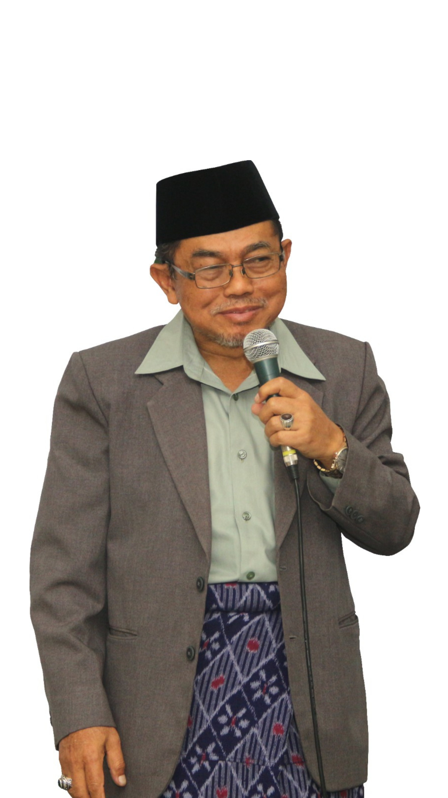
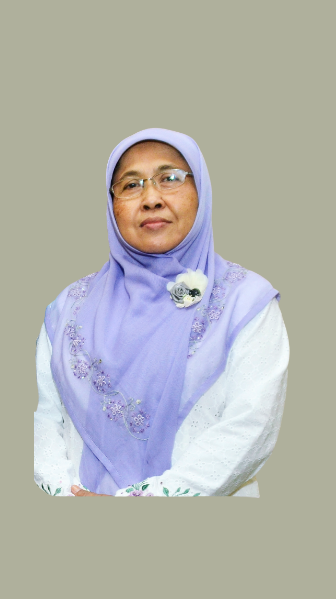
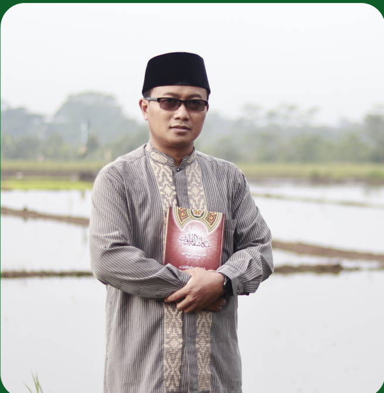
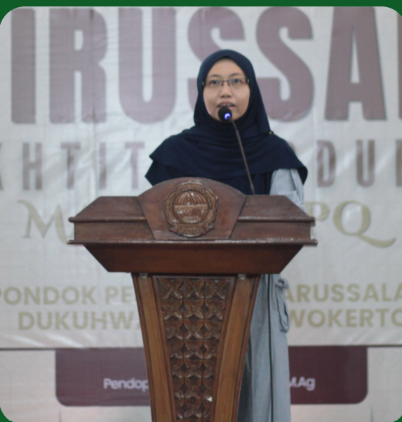
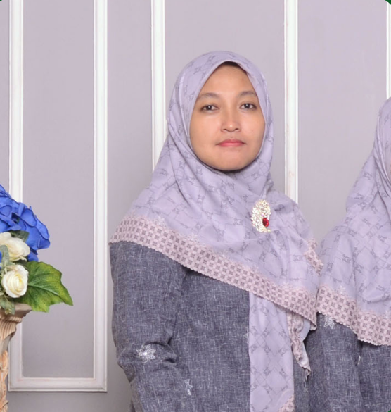
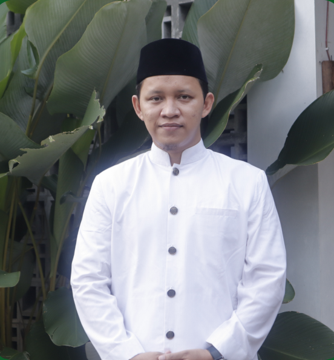
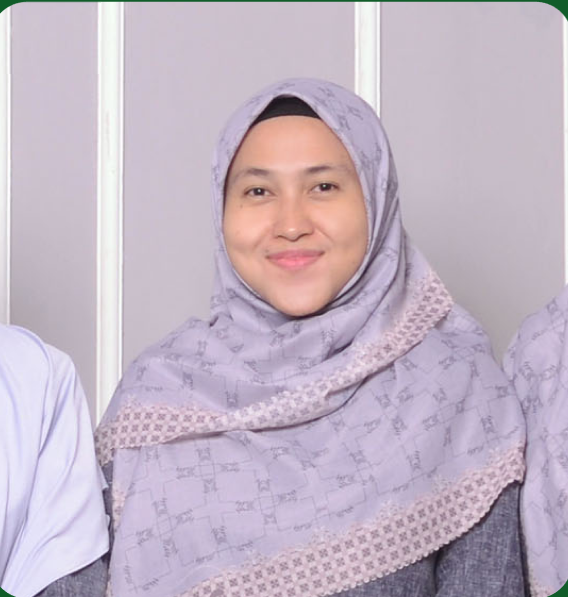

Pondok Pesantren Darussalam Purwokerto merupakan lembaga pendidikan Islam yang mengintegrasikan ilmu agama, akademik, dan pembinaan karakter.

Pondok Pesantren Darussalam Purwokerto berdiri sebagai lembaga pendidikan Islam yang berkomitmen mencetak generasi muslim yang berilmu, berakhlakul karimah, mandiri, serta mampu menghadapi perkembangan zaman.
Dengan menggabungkan sistem pendidikan salaf dan modern, santri memperoleh pendidikan agama, akademik, kepemimpinan, serta keterampilan hidup.
Menjadi pondok pesantren unggulan dalam mencetak generasi Qur'ani, berakhlak mulia, berprestasi, dan berwawasan global.
Pondok mulai berdiri sebagai pusat pendidikan Islam.
Penambahan program tahfidz dan madrasah diniyah.
Digitalisasi administrasi dan pengembangan fasilitas.
Website dan layanan informasi berbasis digital.

Pendiri dan Pengasuh

Pengasuh

Menantu pertama

Putri Pertama

Menantu kedua

Putri Kedua

Menantu ketiga

Putri Ketiga

Menantu Keempat

Putri Keempat

Menantu Kelima

Putri Kelima
Pendaftaran Santri Baru telah dibuka. Bergabunglah bersama Pondok Pesantren Darussalam untuk membentuk generasi Qur'ani, berakhlak mulia, dan berprestasi.
Daftar Sekarang